A Mod for Elder Scrolls IV: Oblivion
by dev_akm
SUMMARY
This is a small texture replacement mod that acts as an unofficial add-on for Qarl's Texture Pack 2. It replaces the two very blurry 256x256 Bethesda textures (and normal maps) for rusty metal roofs in Skingrad that Qarl did not replace in his outstanding mod. The new roof textures are 1024x1024 and match Qarl's rusty metal trim texture.
This mod was inspired by Qarl's Texture Pack 2 and Centurion's Castle Domrose, which is an excellent home for a high-level character (although I had to remove the greeting script from the seller after I bought the place because he kept forcing me into conversations with him). This mod also works really well with Centurion's Castle Dunkerlore, since that castle mod also uses the Skingrad objects.
DESCRIPTION
Qarl's Skingrad Castle textures make Castle Domrose look simply amazing. However, the blurry stock Bethesda roof textures compared to the rest of Qarl's high-quality textures create a very prominent eyesore when standing on Castle Domrose's fancy balcony and in other places around the castle.
Here's the view from Castle Domrose's balcony showing the blurry stock Bethesda roof textures shockingly juxtaposed with Qarl's awesome new high-res textures:
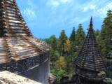
So, rather than complain about it, I decided to correct the situation! I started with Bethesda's textures, bumped up the resolution from 256x256 to 1024x1024 and then blended in Qarl's rusty metal trim texture so the new roof textures would both retain Bethesda's original design and still match Qarl's roof trim texture.
Here are some comparison shots (these are of course all taken with Qarl's Texture Pack 2 installed):
|
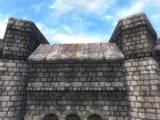
Skingrad before |
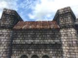
Skingrad after |
|
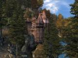
Domrose before |
Domrose after |
|
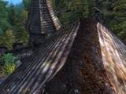
Domrose before |
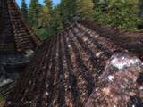
Domrose after |
|
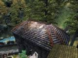
Domrose before |
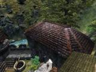
Domrose after |
|
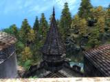
Domrose before |
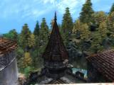
Domrose after |
|
Domrose before |
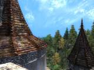
Domrose after |
|
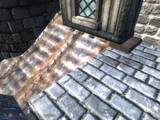
Domrose before |
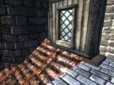
Domrose after |
INSTALLATION
As with Qarl's Texture Pack 2, you must read the included README and follow the instructions exactly or you'll almost certainly have problems. If you're not willing to use the BSA-alteration method of invalidation, then you probably shouldn't use this add-on.
Also, just like Qarl's mod, you'll need a good video card (256Mb or greater) to take advantage of this mod, and even then your FPS may be affected. These are big textures.
If Qarl's Texture Pack 2 is slowing your system down too much, you may also want to install my Qarl Normal Maps Reduced. To get the full benefit of improved performance along with Better Tiling Landscape Textures for Qarl, you should also install my BTSR Normal Maps Reduced. The full install sequence should be:
- Qarl's Texture Pack 2
- Skingrad Roof Textures
- Better Tiling Textures
- Qarl's Normal Maps Reduced
- BTSR Normal Maps Reduced
CREDITS
Bethesda for an awesome game and Qarl for his incredible Texture Pack 2. I used both Qarl's rusty metal texture and Bethesda's roof textures to create the final result.